Schilder in Warnsveld en Zutphen
Weer strak in de verf.
Ik ben Gerco Bierhof. Ik schilder binnen en buiten voor particulieren en bedrijven, netjes afgewerkt en met persoonlijk advies.
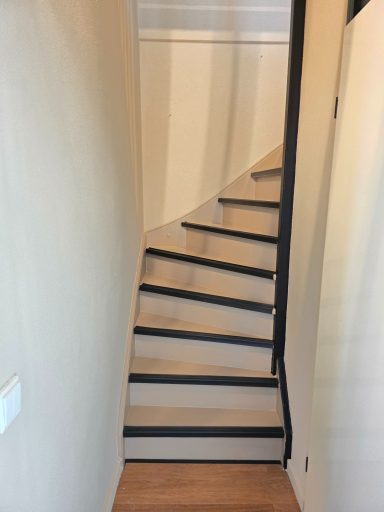
KlaarVan versleten naar strak.
Eén trap, vier momenten. Zo gaat een kale, afgesleten trap stap voor stap terug naar een nette afwerking.
-
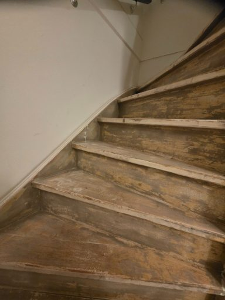
Voor1Zo begon het
Kaal hout, oude verf die loslaat.
-
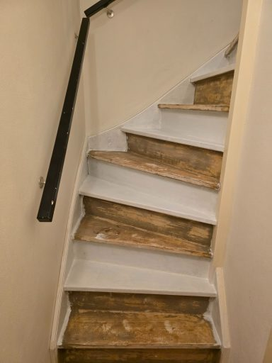
2Onderweg
De eerste lagen gaan erop.
-
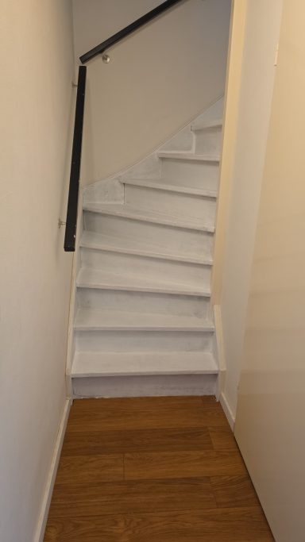
3Egaal
Alles in één kleur, klaar voor de afwerking.
-
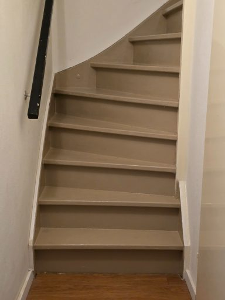
Klaar4Opgeleverd
Strak, egaal en weer jaren mee.
Binnen, buiten en op de muur.
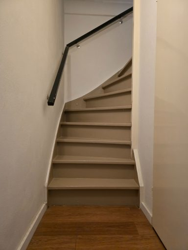
Binnenschilderwerk
Binnen werk ik met milieuvriendelijke verf op waterbasis. Die geeft net zo'n mooie, strakke uitstraling als verf op terpentinebasis, maar zonder sterke of nare geuren na het schilderen. U woont er gewoon in door.
Trappen, deuren, kozijnen, plafonds en wanden.
Buitenschilderwerk
Buitenwerk moet tegen weer en wind kunnen. Ik werk daarom alleen met de beste merken, zodat uw woning of bedrijfspand er weer fris bij staat en dat ook blijft.
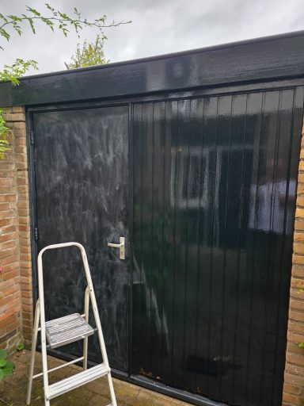
Wandafwerking
Een muur die er rustig en egaal uitziet, of juist net even anders. Ik adviseer u graag welke afwerking bij uw ruimte past.
- Sauswerkwanden en plafonds
- Glasvliesbehangsterk en overschilderbaar
- Renovliesbehangstrak over oude wanden
U belt met de schilder zelf.
Bij mij heeft u één aanspreekpunt, van het eerste gesprek tot de laatste streek. Ik houd u onderweg op de hoogte en denk mee als u twijfelt over kleur of afwerking, zodat het resultaat past bij uw stijl.
Voor particulieren en voor bedrijven. Vraag gerust een vrijblijvende offerte aan.
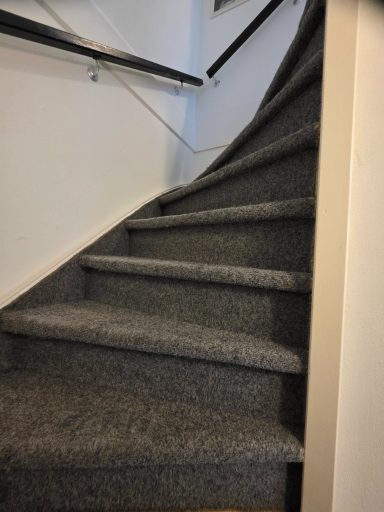
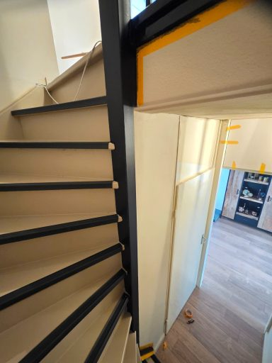
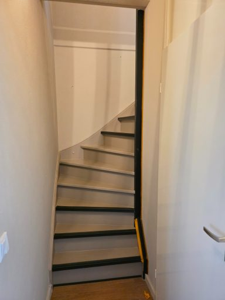
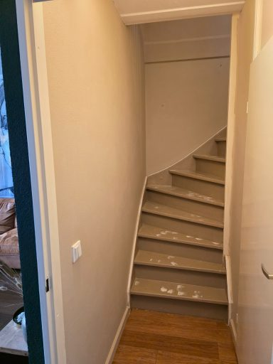
Zullen we uw klus even doorspreken?
Bel of mail mij voor advies of een vrijblijvende offerte.
Bel 06 23060153- Adres
- Herdershof 45
7232 BS Warnsveld - Bereikbaar
- Maandag tot en met vrijdag, 08:00 tot 18:00
Zaterdag en zondag gesloten